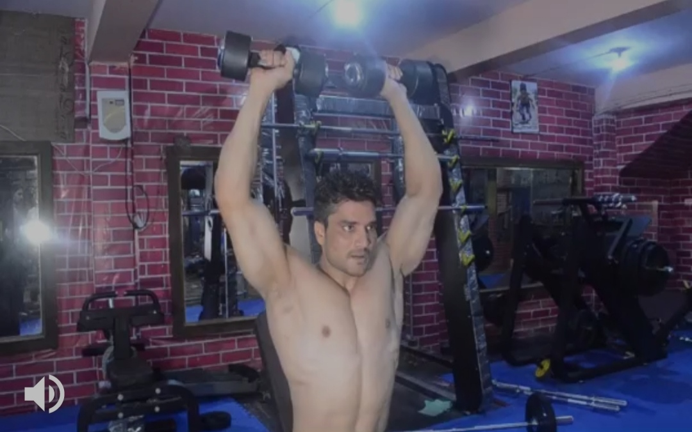
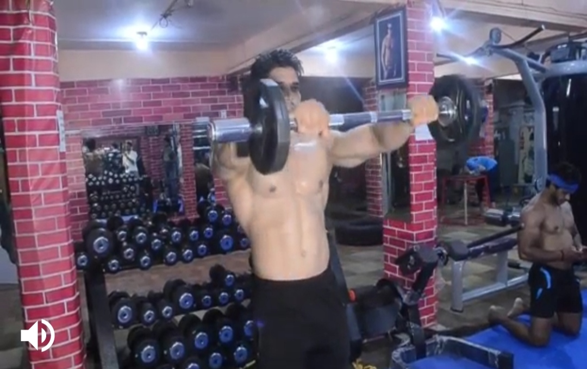
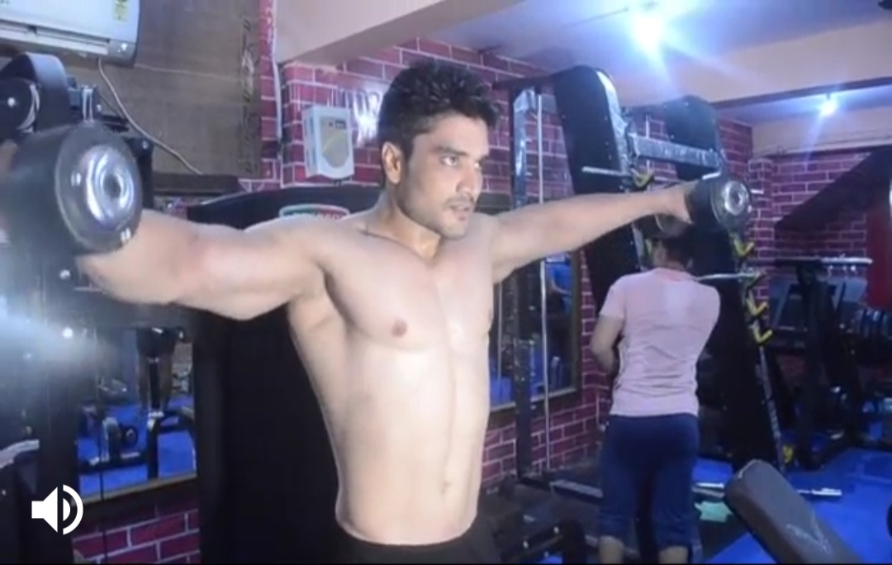
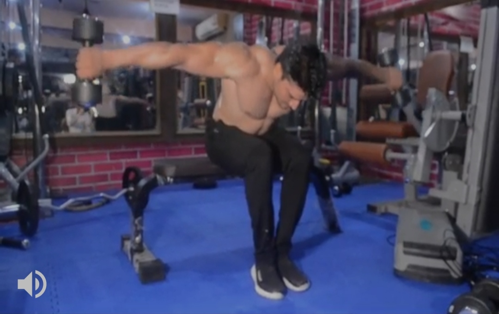

Seated Dumbbell Press
Body Parts:Shoulder
Description:
1) Lie on the bench with a dumbbell in each hand and your feet flat on the floor. You can rest your feet up on the bench if it's more comfortable.
2) Push the dumbbells up so that your arms are directly over your shoulders and your palms are up. Pull your abdominals in, and tilt your chin toward your chest.
3) Lower the dumbbells down and a little to the side until your elbows are slightly below your shoulders.
4) Roll your shoulder blades back and down, like you're pinching them together and accentuating your chest.
5) Push the weights back up, taking care not to lock your elbows or allow your shoulder blades to rise off the bench.
-----------------------------------------------------------------------------------------------------------------------------------------------------------------


Seated Front Press
Body part:Shoulder
Description
1) Sit on a bench with back support in a squat rack. Position a barbell at a height that is just above your head.
2) Grab the barbell with a pronated grip (palms facing forward). Once you pick up the barbell with the correct grip width, lift the bar up over your head by locking your arms.
Hold at about shoulder level and slightly in front of your head. This is your starting position.
3) Lower the bar down to the shoulders slowly as you inhale. Lift the bar back up to the starting position as you exhale.
---------------------------------------------------------------------------------------------------------------------------------------------------------------------------------------


Barbell Front raise
Body part:Shoulder
Description
1) Set the barbell by loading a straight bar or EZ bar with the weight you want to use.
2) Grasp the bar with an overhand grip (palms facing down) with your hands around shoulder width apart.
3) Stand up straight up and let the barbell rest on you thighs.
4) Straighten your back, tense your mid section and pull your shoulders back,
taking the weight off your thighs and holding it about 5 inches from your body. This is the starting position for the exercise.
5) Keeping your arms straight slowly raise the barbell up to shoulder height.
6) Pause, and then slowly lower the barbell back to the starting position.
-------------------------------------------------------------------------------------------------------------------------------------------------------------------------------


Dumbbell Side Lateral Raises
Body parts:Shoulder
Description
Stand with feet about shoulder-width apart, with arms flat at your side holding the dumbbells.
Lift both arms outwards until they are parallel with your shoulders, and then lower back down to resting position, and repeat.
Avoid bending your elbows as this causes strain on the joint.
-------------------------------------------------------------------------------------------------------------------------------------------------------------------------------------------


Dumbbell Rear Deltoid Raises
Body part:Shoulder
Description
1) Place a couple of dumbbells looking forward in front of a flat bench. Sit on the end of the bench with your legs together and the dumbbells behind your calves.
2) Bend at the waist while keeping the back straight in order to pick up the dumbbells. The palms of your hands should be facing each other as you pick them. This will be your starting position.
3) Keeping your torso forward and stationary, and the arms slightly bent at the elbows, lift the dumbbells straight to the side until both arms are parallel to the floor.
4) After a one second contraction at the top, slowly lower the dumbbells back to the starting position.